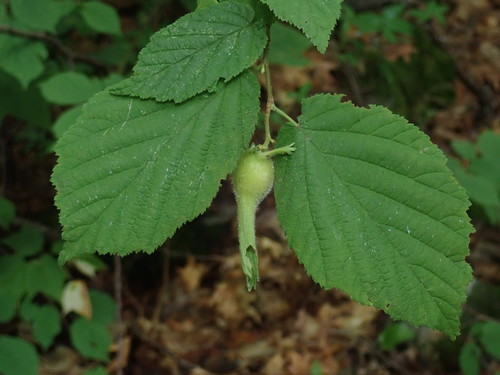
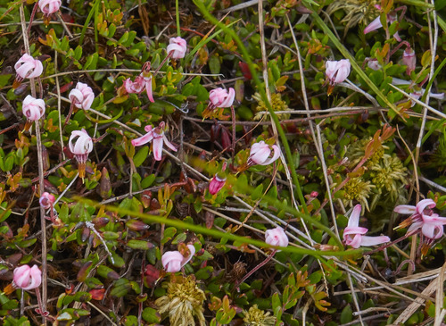
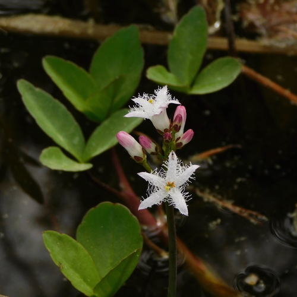
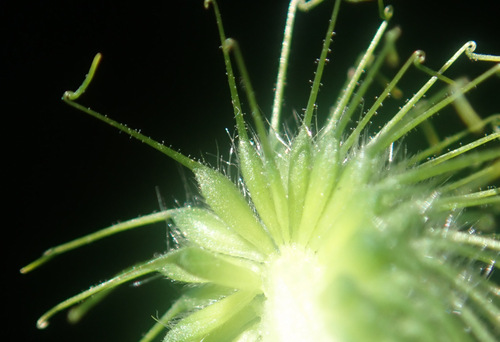
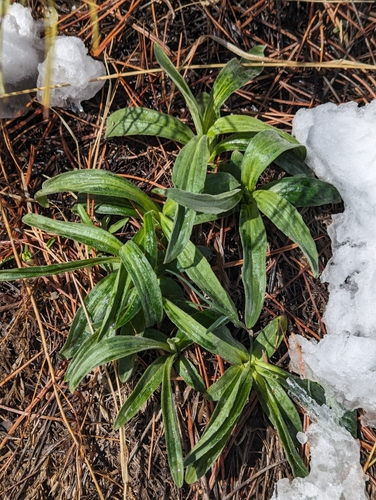
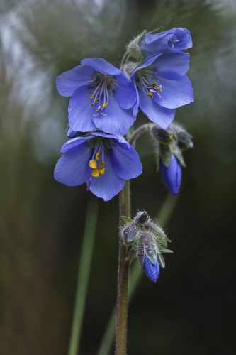

Pollinator support
What the plant does, from the tags the catalogue records against it.
250 plants
 Denali National Park and Preserve, some rights reserved (CC BY)") Alaska HarebellCampanula lasiocarpa
Alaska HarebellCampanula lasiocarpa Alberta PenstemonPenstemon albertinus
Alberta PenstemonPenstemon albertinus Thomas Koffel, some rights reserved (CC BY), uploaded by Thomas Koffel") Alpine AsterAster alpinus
Alpine AsterAster alpinus Caleb Catto, some rights reserved (CC BY), uploaded by Caleb Catto") Alpine Forget-me-notMyosotis asiaticaAlpine Hedysarum (Bear Root)Hedysarum americanum
Alpine Forget-me-notMyosotis asiaticaAlpine Hedysarum (Bear Root)Hedysarum americanum Drepanostoma, nekatere pravice pridžane (CC BY), naložena od Drepanostoma") Alpine Rock JasmineAndrosace chamaejasmeArctic AsterEurybia sibirica
Alpine Rock JasmineAndrosace chamaejasmeArctic AsterEurybia sibirica Ascending MilkvetchAstragalus laxmannii
Ascending MilkvetchAstragalus laxmannii Leslie Seaton, some rights reserved (CC BY)") BalsamrootBalsamorhiza sagittata
BalsamrootBalsamorhiza sagittata naturalist charlie, some rights reserved (CC BY), uploaded by naturalist charlie") Basket WillowSalix petiolarisBastard ToadflaxComandra umbellata
Basket WillowSalix petiolarisBastard ToadflaxComandra umbellata
Beaked HazelnutCorylus cornutaBebb's SedgeCarex bebbii Eugene Popov, some rights reserved (CC BY), uploaded by Eugene Popov") Birch-leaved SpireaSpiraea betulifoliaBlack HawthornCrataegus douglasiiBlanketflowerGaillardia aristataBlue ClematisClematis occidentalisBlue ColumbineAquilegia brevistyla
Birch-leaved SpireaSpiraea betulifoliaBlack HawthornCrataegus douglasiiBlanketflowerGaillardia aristataBlue ClematisClematis occidentalisBlue ColumbineAquilegia brevistyla Joshua Mayer, some rights reserved (CC BY-SA)") Blue-eyed GrassSisyrinchium montanum
Blue-eyed GrassSisyrinchium montanum
Bog CranberryVaccinium oxycoccos Boreal YarrowAchillea borealis
Boreal YarrowAchillea borealis Laura Gaudette, some rights reserved (CC BY), uploaded by Laura Gaudette") Bracted HoneysuckleLonicera involucrata
Bracted HoneysuckleLonicera involucrata Broad-leaved ArrowheadSagittaria latifolia
Broad-leaved ArrowheadSagittaria latifolia Bronze BellsAnticlea occidentalis
Bronze BellsAnticlea occidentalis W. Terry Hunefeld, some rights reserved (CC BY), uploaded by W. Terry Hunefeld") BroomweedGutierrezia sarothrae
BroomweedGutierrezia sarothrae
BuckbeanMenyanthes trifoliata Terry Woodward, some rights reserved (CC BY), uploaded by Terry Woodward") Bur OakQuercus macrocarpaButte PrimroseOenothera cespitosa subsp. cespitosa
Bur OakQuercus macrocarpaButte PrimroseOenothera cespitosa subsp. cespitosa Dendroica cerulea, some rights reserved (CC BY)") Canada AnemoneAnemonastrum canadense
Canada AnemoneAnemonastrum canadense Douglas Goldman, some rights reserved (CC BY-SA), uploaded by Douglas Goldman") Canada GoldenrodSolidago canadensis
Canada GoldenrodSolidago canadensis Jim Morefield, some rights reserved (CC BY), uploaded by Jim Morefield") Canada Milk VetchAstragalus canadensis
Canada Milk VetchAstragalus canadensis Douglas Goldman, some rights reserved (CC BY-SA), uploaded by Douglas Goldman") ChokecherryPrunus virginiana
ChokecherryPrunus virginiana davecz2, some rights reserved (CC BY-SA), uploaded by davecz2") Common AlumrootHeuchera richardsonii
Common AlumrootHeuchera richardsonii J Brew, some rights reserved (CC BY-SA), uploaded by J Brew") Common PaintbrushCastilleja miniata
Common PaintbrushCastilleja miniata Matt Lavin, some rights reserved (CC BY)") Common TwinpodPhysaria didymocarpa
Common TwinpodPhysaria didymocarpa Superior National Forest, some rights reserved (CC BY)") Cream-Coloured PeavineLathyrus ochroleucusCreeping Oregon GrapeMahonia repens
Cream-Coloured PeavineLathyrus ochroleucusCreeping Oregon GrapeMahonia repens Denali National Park and Preserve, some rights reserved (CC BY)") Creeping SibbaldiaSibbaldia procumbens
Creeping SibbaldiaSibbaldia procumbens Joshua Mayer, some rights reserved (CC BY-SA)") Crowfoot VioletViola pedatifida
Crowfoot VioletViola pedatifida Caleb Catto, some rights reserved (CC BY), uploaded by Caleb Catto") Cushion Umbrella PlantEriogonum androsaceumCut-leaved AnemoneAnemone multifida
Cushion Umbrella PlantEriogonum androsaceumCut-leaved AnemoneAnemone multifida James H. Thomas, some rights reserved (CC BY), uploaded by James H. Thomas") Desert Shooting StarPrimula conjugens
Desert Shooting StarPrimula conjugens Matt Lavin, some rights reserved (CC BY-SA)") Dotted BlazingstarLiatris punctata
Dotted BlazingstarLiatris punctata Matt Lavin, some rights reserved (CC BY-SA)") Drummond's MilkvetchAstragalus drummondii
Drummond's MilkvetchAstragalus drummondii abogomazova, some rights reserved (CC BY), uploaded by abogomazova") Dwarf RaspberryRubus arcticus
Dwarf RaspberryRubus arcticus Early Blue VioletViola aduncaEarly Yellow OxytropisOxytropis sericea
Early Blue VioletViola aduncaEarly Yellow OxytropisOxytropis sericea Nick Block, some rights reserved (CC BY), uploaded by Nick Block") Eastern Red ColumbineAquilegia canadensisElegant GoldenrodSolidago lepida
Eastern Red ColumbineAquilegia canadensisElegant GoldenrodSolidago lepida Tom Pollard, some rights reserved (CC BY), uploaded by Tom Pollard") Evening PrimroseOenothera biennisFalse DragonheadPhysostegia ledinghamiiFalse Dragonhead (Western Obedient Plant)Physostegia parviflora
Evening PrimroseOenothera biennisFalse DragonheadPhysostegia ledinghamiiFalse Dragonhead (Western Obedient Plant)Physostegia parviflora Alex Abair, some rights reserved (CC BY), uploaded by Alex Abair") Field ChickweedCerastium arvense
Field ChickweedCerastium arvense Alexis Williams, some rights reserved (CC BY), uploaded by Alexis Williams") Field PussytoesAntennaria neglecta
Field PussytoesAntennaria neglecta Douglas Goldman, some rights reserved (CC BY-SA), uploaded by Douglas Goldman") FireweedChamaenerion angustifolium
FireweedChamaenerion angustifolium Douglas Goldman, some rights reserved (CC BY-SA), uploaded by Douglas Goldman") Flat-topped GoldenrodEuthamia graminifolia
Flat-topped GoldenrodEuthamia graminifolia Michael J. Papay, some rights reserved (CC BY), uploaded by Michael J. Papay") Flat-topped White AsterDoellingeria umbellata
Flat-topped White AsterDoellingeria umbellata Catherine C. Galley, some rights reserved (CC BY), uploaded by Catherine C. Galley") Fragrant SumacRhus aromatica
Fragrant SumacRhus aromatica er-birds, some rights reserved (CC BY), uploaded by er-birds") Fringed LoosestrifeLysimachia ciliataFuzzy-tongue PenstemonPenstemon eriantherus
Fringed LoosestrifeLysimachia ciliataFuzzy-tongue PenstemonPenstemon eriantherus Alan Prather, some rights reserved (CC BY), uploaded by Alan Prather") Giant HyssopAgastache foeniculumGlacier LilyErythronium grandiflorum
Giant HyssopAgastache foeniculumGlacier LilyErythronium grandiflorum Matt Lavin, some rights reserved (CC BY-SA)") Golden BeanThermopsis rhombifolia
Golden BeanThermopsis rhombifolia peganum, some rights reserved (CC BY-SA)") Golden Currant (Buffalo Currant)Ribes aureum
Golden Currant (Buffalo Currant)Ribes aureum crothfels, some rights reserved (CC BY)") Golden DrabaDraba aurea
Golden DrabaDraba aurea Matt Berger, some rights reserved (CC BY), uploaded by Matt Berger") Golden SedgeCarex aurea
Golden SedgeCarex aurea Thayne Tuason, some rights reserved (CC BY-SA)") Golden TickseedCoreopsis tinctoriaGreater Northern AsterCanadanthus modestus
Golden TickseedCoreopsis tinctoriaGreater Northern AsterCanadanthus modestus Mary Krieger, some rights reserved (CC BY), uploaded by Mary Krieger") Green MilkweedAsclepias ovalifolia
Green MilkweedAsclepias ovalifolia Matt Lavin, some rights reserved (CC BY-SA)") Ground PlumAstragalus crassicarpusGumweedGrindelia squarrosa
Ground PlumAstragalus crassicarpusGumweedGrindelia squarrosa Jim Morefield, some rights reserved (CC BY)") Hairy ArnicaArnica mollis
Hairy ArnicaArnica mollis Matt Lavin, some rights reserved (CC BY-SA)") Hairy Golden AsterHeterotheca villosaHarebellCampanula alaskana
Hairy Golden AsterHeterotheca villosaHarebellCampanula alaskana psweet, some rights reserved (CC BY-SA), uploaded by psweet") Heart-leaved Alexanders (Golden Alexanders)Zizia apteraHeart-leaved ArnicaArnica cordifolia
Heart-leaved Alexanders (Golden Alexanders)Zizia apteraHeart-leaved ArnicaArnica cordifolia Tom Norton, some rights reserved (CC BY), uploaded by Tom Norton") Highbush CranberryViburnum opulus
Highbush CranberryViburnum opulus Matt Lavin, some rights reserved (CC BY)") Hoary AsterDieteria canescens
Hoary AsterDieteria canescens Hooded Ladies' TressesSpiranthes romanzoffiana
Hooded Ladies' TressesSpiranthes romanzoffiana Tero Laakso, some rights reserved (CC BY-SA)") Jerusalem ArtichokeHelianthus tuberosus
Jerusalem ArtichokeHelianthus tuberosus Joe-Pye WeedEutrochium maculatum
Joe-Pye WeedEutrochium maculatum Steve Matson, some rights reserved (CC BY), uploaded by Steve Matson") Lance-leaved StonecropSedum lanceolatum
Lance-leaved StonecropSedum lanceolatum
Large-leaved AvensGeum macrophyllum Andreas Stiller, some rights reserved (CC BY), uploaded by Andreas Stiller") Late GoldenrodSolidago giganteaLate Yellow OxytropisOxytropis monticola
Late GoldenrodSolidago giganteaLate Yellow OxytropisOxytropis monticola H. Zell, some rights reserved (CC BY-SA)") Leafy ArnicaArnica chamissonis
Leafy ArnicaArnica chamissonis Andrey Zharkikh, some rights reserved (CC BY)") Leafy AsterSymphyotrichum foliaceum
Leafy AsterSymphyotrichum foliaceum Justin Meissen, some rights reserved (CC BY-SA)") Lilac PenstemonPenstemon gracilis
Lilac PenstemonPenstemon gracilis Lindley's AsterSymphyotrichum ciliolatum
Lindley's AsterSymphyotrichum ciliolatum Steve Matson, some rights reserved (CC BY), uploaded by Steve Matson") Little-leaved AlumrootHeuchera parvifolia
Little-leaved AlumrootHeuchera parvifolia Dustin Snider, some rights reserved (CC BY), uploaded by Dustin Snider") Long-fruited AnemoneAnemone cylindrica
Long-fruited AnemoneAnemone cylindrica
Benjamin Zwittnig, some rights reserved (CC BY)") Low BilberryVaccinium myrtillus
Low BilberryVaccinium myrtillus Michael Tidwell, some rights reserved (CC BY), uploaded by Michael Tidwell") Low TownsendiaTownsendia exscapaLyalls PenstemonPenstemon lyalliiMany-flowered Aster (Tufted White Prairie Aster)Symphyotrichum ericoides
Low TownsendiaTownsendia exscapaLyalls PenstemonPenstemon lyalliiMany-flowered Aster (Tufted White Prairie Aster)Symphyotrichum ericoides davecz2, some rights reserved (CC BY-SA)") Marsh AsterSymphyotrichum boreale
Marsh AsterSymphyotrichum boreale Ivar Leidus, some rights reserved (CC BY-SA)") Marsh CinquefoilComarum palustre
Marsh CinquefoilComarum palustre Frank Mayfield, some rights reserved (CC BY-SA)") Marsh Hedge NettleStachys pilosa
Marsh Hedge NettleStachys pilosa Patrick Hacker, some rights reserved (CC BY), uploaded by Patrick Hacker") Marsh Hedge Nettle (Marsh Woundwort)Stachys pilosa var. pilosa
Marsh Hedge Nettle (Marsh Woundwort)Stachys pilosa var. pilosa eeyipes, some rights reserved (CC BY)") Marsh MarigoldCaltha palustris
Marsh MarigoldCaltha palustris Benoit Renaud, some rights reserved (CC BY), uploaded by Benoit Renaud") Marsh SkullcapScutellaria galericulataMarsh VioletViola palustrisMaximilian SunflowerHelianthus maximiliani
Marsh SkullcapScutellaria galericulataMarsh VioletViola palustrisMaximilian SunflowerHelianthus maximiliani
Meadow ArnicaArnica fulgens aarongunnar, some rights reserved (CC BY), uploaded by aarongunnar") Meadow BlazingstarLiatris ligulistylis
Meadow BlazingstarLiatris ligulistylis Sarah Johnson, some rights reserved (CC BY), uploaded by Sarah Johnson") MeadowsweetSpiraea alba
MeadowsweetSpiraea alba Matt Lavin, some rights reserved (CC BY-SA)") Missouri MilkvetchAstragalus missouriensisMoss PhloxPhlox hoodii
Missouri MilkvetchAstragalus missouriensisMoss PhloxPhlox hoodii Matt Lavin, some rights reserved (CC BY)") Mountain GentianGentiana calycosaMountain HollyhockIliamna rivularisNarrow-leaved HawkweedHieracium umbellatum
Mountain GentianGentiana calycosaMountain HollyhockIliamna rivularisNarrow-leaved HawkweedHieracium umbellatum Jason Sturner, some rights reserved (CC BY)") Nodding OnionAllium cernuum
Nodding OnionAllium cernuum Douglas Goldman, some rights reserved (CC BY-SA), uploaded by Douglas Goldman") Northern BedstrawGalium boreale
Northern BedstrawGalium boreale Ken-ichi Ueda, some rights reserved (CC BY), uploaded by Ken-ichi Ueda") Northern GentianGentianella amarella
Northern GentianGentianella amarella Carrie Seltzer, some rights reserved (CC BY), uploaded by Carrie Seltzer") Northern HedysarumHedysarum boreale
Northern HedysarumHedysarum boreale Bob Nieman, some rights reserved (CC BY), uploaded by Bob Nieman") Nuttall's SunflowerHelianthus nuttallii
Nuttall's SunflowerHelianthus nuttallii Caleb Catto, some rights reserved (CC BY), uploaded by Caleb Catto") Pale AgoserisAgoseris glaucaParry's TownsendiaTownsendia parryi
Pale AgoserisAgoseris glaucaParry's TownsendiaTownsendia parryi Tom Norton, some rights reserved (CC BY), uploaded by Tom Norton") Pearly EverlastingAnaphalis margaritacea
Pearly EverlastingAnaphalis margaritacea Philadelphia FleabaneErigeron philadelphicus
Philadelphia FleabaneErigeron philadelphicus Tom Norton, some rights reserved (CC BY), uploaded by Tom Norton") Pin CherryPrunus pensylvanicaPink CorydalisCapnoides sempervirens
Pin CherryPrunus pensylvanicaPink CorydalisCapnoides sempervirens Bob Walker, some rights reserved (CC BY), uploaded by Bob Walker") Pink Monkey FlowerErythranthe lewisii
Pink Monkey FlowerErythranthe lewisii Matt Berger, some rights reserved (CC BY), uploaded by Matt Berger") Pink PussytoesAntennaria roseaPink Spirea (Rose Meadowsweet)Spiraea alba var. latifolia
Pink PussytoesAntennaria roseaPink Spirea (Rose Meadowsweet)Spiraea alba var. latifolia Dustin Snider, some rights reserved (CC BY), uploaded by Dustin Snider") Prairie ButtercupRanunculus rhomboideus
Prairie ButtercupRanunculus rhomboideus Matt Lavin, some rights reserved (CC BY-SA)") Prairie CinquefoilPotentilla pensylvanica
Prairie CinquefoilPotentilla pensylvanica Joshua Mayer, some rights reserved (CC BY-SA)") Prairie Cinquefoil (Tall Cinquefoil)Drymocallis arguta
Prairie Cinquefoil (Tall Cinquefoil)Drymocallis arguta Meghan Cassidy, some rights reserved (CC BY-SA), uploaded by Meghan Cassidy") Prairie ConeflowerRatibida columnifera
Prairie ConeflowerRatibida columnifera Syd Cannings, some rights reserved (CC BY), uploaded by Syd Cannings") Prairie CrocusPulsatilla nuttalliana
Prairie CrocusPulsatilla nuttalliana Cesar Ormazabal, some rights reserved (CC BY), uploaded by Cesar Ormazabal") Prairie GentianGentiana affinisPrairie GoldenrodSolidago missouriensis
Prairie GentianGentiana affinisPrairie GoldenrodSolidago missouriensis Matt Lavin, some rights reserved (CC BY-SA)") Prairie Onion (Textile Onion)Allium textile
Prairie Onion (Textile Onion)Allium textile Joshua Mayer, some rights reserved (CC BY-SA)") Prairie RoseRosa arkansanaPrairie SagewortArtemisia frigidaPrairie ThistleCirsium flodmaniiPrairie TurnipPediomelum esculentum
Prairie RoseRosa arkansanaPrairie SagewortArtemisia frigidaPrairie ThistleCirsium flodmaniiPrairie TurnipPediomelum esculentum Tom Norton, some rights reserved (CC BY), uploaded by Tom Norton") Prickly Wild RoseRosa acicularis
Prickly Wild RoseRosa acicularis Георгий Виноградов (Georgy Vinogradov), some rights reserved (CC BY), uploaded by Георгий Виноградов (Georgy Vinogradov)") Purple Avens (Water Avens)Geum rivalePurple ConeflowerEchinacea angustifoliaPurple PeavineLathyrus venosusPurple Prairie CloverDalea purpurea
Purple Avens (Water Avens)Geum rivalePurple ConeflowerEchinacea angustifoliaPurple PeavineLathyrus venosusPurple Prairie CloverDalea purpurea Douglas Goldman, some rights reserved (CC BY-SA), uploaded by Douglas Goldman") Purple-stemmed Tall Aster (Swamp Aster)Symphyotrichum puniceum
Purple-stemmed Tall Aster (Swamp Aster)Symphyotrichum puniceum bobkennedy, some rights reserved (CC BY-SA), uploaded by bobkennedy") Pussy WillowSalix discolor
Pussy WillowSalix discolor Matt Lavin, some rights reserved (CC BY-SA)") RabbitbrushEricameria nauseosa
RabbitbrushEricameria nauseosa Alan Rockefeller, some rights reserved (CC BY), uploaded by Alan Rockefeller") Red ColumbineAquilegia formosa
Red ColumbineAquilegia formosa giantcicada, some rights reserved (CC BY), uploaded by giantcicada") Red Osier DogwoodCornus sericea
Red Osier DogwoodCornus sericea Benoit NABHOLZ, some rights reserved (CC BY-SA), uploaded by Benoit NABHOLZ") River BeautyChamaenerion latifolium
River BeautyChamaenerion latifolium Roadside Agrimony (Woodland Agrimony)Agrimonia striataRocky Mountain BeeplantPeritoma serrulata
Roadside Agrimony (Woodland Agrimony)Agrimonia striataRocky Mountain BeeplantPeritoma serrulata marek, some rights reserved (CC BY), uploaded by marek") Rocky-Ledge BeardtonguePenstemon ellipticus
Rocky-Ledge BeardtonguePenstemon ellipticus Rosy Pussytoes (Littleleaf Pussytoes)Antennaria microphyllaRound-leaved AlumrootHeuchera cylindricaRound-leaved Yellow VioletViola orbiculata
Rosy Pussytoes (Littleleaf Pussytoes)Antennaria microphyllaRound-leaved AlumrootHeuchera cylindricaRound-leaved Yellow VioletViola orbiculata Saline Shooting StarPrimula pauciflora
Saline Shooting StarPrimula pauciflora Sam Kieschnick, some rights reserved (CC BY), uploaded by Sam Kieschnick") Saskatoon BerryAmelanchier alnifolia
Saskatoon BerryAmelanchier alnifolia Stan Shebs, some rights reserved (CC BY-SA)") Scarlet Butterfly PlantOenothera suffrutescensScarlet GlobemallowSphaeralcea coccineaScorpion WeedPhacelia sericea
Scarlet Butterfly PlantOenothera suffrutescensScarlet GlobemallowSphaeralcea coccineaScorpion WeedPhacelia sericea Douglas Goldman, some rights reserved (CC BY-SA), uploaded by Douglas Goldman") Self-healPrunella vulgarisShooting StarDodecatheon pulchellumShowy AsterEurybia conspicua
Self-healPrunella vulgarisShooting StarDodecatheon pulchellumShowy AsterEurybia conspicua Fluff Berger, some rights reserved (CC BY-SA), uploaded by Fluff Berger") Showy FleabaneErigeron speciosus
Showy FleabaneErigeron speciosus JerryFriedman, some rights reserved (CC BY-SA)") Showy Jacob's-ladderPolemonium pulcherrimumShowy LocoweedOxytropis splendens
Showy Jacob's-ladderPolemonium pulcherrimumShowy LocoweedOxytropis splendens Douglas Goldman, some rights reserved (CC BY-SA), uploaded by Douglas Goldman") Showy MilkweedAsclepias speciosa
Showy MilkweedAsclepias speciosa Matt Berger, some rights reserved (CC BY), uploaded by Matt Berger") Showy PussytoesAntennaria pulcherrimaShrubby CinquefoilDasiphora fruticosa
Showy PussytoesAntennaria pulcherrimaShrubby CinquefoilDasiphora fruticosa David Anderson, some rights reserved (CC BY), uploaded by David Anderson") Silky LupineLupinus sericeus
Silky LupineLupinus sericeus Tim Messick, some rights reserved (CC BY), uploaded by Tim Messick") Silvery LupineLupinus argenteus
Silvery LupineLupinus argenteus pfly, some rights reserved (CC BY-SA)") Sitka ValerianValeriana sitchensis
Sitka ValerianValeriana sitchensis Jason Alexander, some rights reserved (CC BY), uploaded by Jason Alexander") Slender Blue BeardtonguePenstemon procerus
Slender Blue BeardtonguePenstemon procerus Slender Cinquefoil (Graceful Cinquefoil)Potentilla gracilisSmall-leaved Everlasting (Small-leaved Pussytoes)Antennaria parvifolia
Slender Cinquefoil (Graceful Cinquefoil)Potentilla gracilisSmall-leaved Everlasting (Small-leaved Pussytoes)Antennaria parvifolia aarongunnar, some rights reserved (CC BY), uploaded by aarongunnar") Smooth AsterSymphyotrichum laeve
Smooth AsterSymphyotrichum laeve Matt Lavin, some rights reserved (CC BY-SA)") Smooth Blue BeardtonguePenstemon nitidusSmooth Fleabane (Streamside Fleabane)Erigeron glabellusSneezeweedHelenium autumnaleSpear-leaved ArnicaArnica lonchophylla
Smooth Blue BeardtonguePenstemon nitidusSmooth Fleabane (Streamside Fleabane)Erigeron glabellusSneezeweedHelenium autumnaleSpear-leaved ArnicaArnica lonchophylla gwt2102, some rights reserved (CC BY)") Spreading DogbaneApocynum androsaemifolium
Spreading DogbaneApocynum androsaemifolium Square-stem MonkeyflowerMimulus ringensSticky GoldenrodSolidago glutinosa
Square-stem MonkeyflowerMimulus ringensSticky GoldenrodSolidago glutinosa Sticky Purple GeraniumGeranium viscosissimum
Sticky Purple GeraniumGeranium viscosissimum Matt Lavin, some rights reserved (CC BY-SA)") Stiff GoldenrodSolidago rigidaStiff Sunflower (Rhombic-leaved Sunflower)Helianthus pauciflorus
Stiff GoldenrodSolidago rigidaStiff Sunflower (Rhombic-leaved Sunflower)Helianthus pauciflorus Kate, some rights reserved (CC BY), uploaded by Kate") Sulphur HedysarumHedysarum sulphurescensSweet Broom (Alpine Sweetvetch)Hedysarum alpinum
Sulphur HedysarumHedysarum sulphurescensSweet Broom (Alpine Sweetvetch)Hedysarum alpinum Zihao Wang, some rights reserved (CC BY), uploaded by Zihao Wang") Tall Anemone (Thimbleweed)Anemone virginiana
Tall Anemone (Thimbleweed)Anemone virginiana Sandy Wolkenberg, some rights reserved (CC BY), uploaded by Sandy Wolkenberg") Tall GoldenrodSolidago altissima
Tall GoldenrodSolidago altissima
Tall Jacob's LadderPolemonium acutiflorum 2007 Dianne Fristrom, some rights reserved (CC BY-SA)") Tall LarkspurDelphinium glaucum
Tall LarkspurDelphinium glaucum Connie Taylor, some rights reserved (CC BY), uploaded by Connie Taylor") Tall Lungwort (Blue Bells)Mertensia paniculata
Tall Lungwort (Blue Bells)Mertensia paniculata Mary Krieger, some rights reserved (CC BY), uploaded by Mary Krieger") Tall Meadow RueThalictrum dasycarpum
Tall Meadow RueThalictrum dasycarpum Eric Lamb, some rights reserved (CC BY), uploaded by Eric Lamb") Tall Showy YarrowAchillea alpina
Tall Showy YarrowAchillea alpina Gavin Slater, some rights reserved (CC BY), uploaded by Gavin Slater") ThimbleberryRubus parviflorus
ThimbleberryRubus parviflorus Matt Lavin, some rights reserved (CC BY-SA)") Three Flowered Avens (Prairie Smoke, Old Man's Whiskers)Geum triflorumTrailing RaspberryRubus pedatusTufted FleabaneErigeron caespitosus
Three Flowered Avens (Prairie Smoke, Old Man's Whiskers)Geum triflorumTrailing RaspberryRubus pedatusTufted FleabaneErigeron caespitosus Matt Lavin, some rights reserved (CC BY-SA)") Twin ArnicaArnica sororia
Twin ArnicaArnica sororia Chris Johnson, some rights reserved (CC BY), uploaded by Chris Johnson") TwinflowerLinnaea borealis
TwinflowerLinnaea borealis Rob Routledge, Sault College, Bugwood.org, some rights reserved (CC BY)") Twining Honeysuckle (Limber Honeysuckle)Lonicera dioicaUmbrella BuckwheatEriogonum umbellatum
Twining Honeysuckle (Limber Honeysuckle)Lonicera dioicaUmbrella BuckwheatEriogonum umbellatum Mary Krieger, some rights reserved (CC BY), uploaded by Mary Krieger") Veiny Meadow-RueThalictrum venulosum
Veiny Meadow-RueThalictrum venulosum naturalist charlie, some rights reserved (CC BY), uploaded by naturalist charlie") Velvet-leaf BlueberryVaccinium myrtilloides
Velvet-leaf BlueberryVaccinium myrtilloides Douglas Goldman, some rights reserved (CC BY-SA), uploaded by Douglas Goldman") Water Arum (Wild Calla)Calla palustrisWater ParsnipSium suave
Water Arum (Wild Calla)Calla palustrisWater ParsnipSium suave Kevin Krebs, some rights reserved (CC BY), uploaded by Kevin Krebs") Water SmartweedPersicaria amphibia
Water SmartweedPersicaria amphibia Nick Block, some rights reserved (CC BY), uploaded by Nick Block") Western Blue IrisIris missouriensis
Western Blue IrisIris missouriensis Katja Schulz, some rights reserved (CC BY)") Western Canada VioletViola rugulosa
Western Canada VioletViola rugulosa Martin Purdy, some rights reserved (CC BY), uploaded by Martin Purdy") Western Meadow AsterSymphyotrichum campestre
Western Meadow AsterSymphyotrichum campestre Carol Jacobs-Carre, some rights reserved (CC BY-SA), uploaded by Carol Jacobs-Carre") Western MeadowrueThalictrum occidentale
Western MeadowrueThalictrum occidentale Western Mountain AshSorbus scopulinaWestern Willow AsterSymphyotrichum hesperiumWestern Wood LilyLilium philadelphicum
Western Mountain AshSorbus scopulinaWestern Willow AsterSymphyotrichum hesperiumWestern Wood LilyLilium philadelphicum marlin harms, some rights reserved (CC BY)") White CamasAnticlea elegansWhite Evening PrimroseOenothera nuttallii
White CamasAnticlea elegansWhite Evening PrimroseOenothera nuttallii White GeraniumGeranium richardsonii
White GeraniumGeranium richardsonii Logan J.L. Bradley, some rights reserved (CC BY), uploaded by Logan J.L. Bradley") White Mountain AvensDryas hookerianaWhite Prairie AsterSymphyotrichum falcatum
White Mountain AvensDryas hookerianaWhite Prairie AsterSymphyotrichum falcatum Esben Kjaer, some rights reserved (CC BY), uploaded by Esben Kjaer") White Prairie CloverDalea candida
White Prairie CloverDalea candida tzeducation, some rights reserved (CC BY), uploaded by tzeducation") Wild BergamotMonarda fistulosaWild Black CurrantRibes americanum
Wild BergamotMonarda fistulosaWild Black CurrantRibes americanum Tom Hilton, some rights reserved (CC BY), uploaded by Tom Hilton") Wild Blue FlaxLinum lewisii
Wild Blue FlaxLinum lewisii Pohled 111, some rights reserved (CC BY-SA)") Wild ChivesAllium schoenoprasum
Wild ChivesAllium schoenoprasum Peter L Achuff, some rights reserved (CC BY), uploaded by Peter L Achuff") Wild ClematisClematis ligusticifolia
Wild ClematisClematis ligusticifolia Matt Lavin, some rights reserved (CC BY-SA)") Wild LicoriceGlycyrrhiza lepidotaWild MintMentha canadensis
Wild LicoriceGlycyrrhiza lepidotaWild MintMentha canadensis Ole Husby, some rights reserved (CC BY-SA)") Wild RaspberryRubus idaeus
Wild RaspberryRubus idaeus Abby Hyde, some rights reserved (CC BY), uploaded by Abby Hyde") Wild StrawberryFragaria virginiana
Wild StrawberryFragaria virginiana Andrea Romero, some rights reserved (CC BY), uploaded by Andrea Romero") Wild VetchVicia americana
Wild VetchVicia americana Michael J. Papay, some rights reserved (CC BY), uploaded by Michael J. Papay") Willow AsterSymphyotrichum lanceolatum
Willow AsterSymphyotrichum lanceolatum Alison Northup, some rights reserved (CC BY), uploaded by Alison Northup") Wood Betony (Bracted Lousewort)Pedicularis bracteosa
Wood Betony (Bracted Lousewort)Pedicularis bracteosa Don Loarie, some rights reserved (CC BY), uploaded by Don Loarie") Woods' RoseRosa woodsii
Woods' RoseRosa woodsii Woolly CinquefoilPotentilla hippianaWoolly GroundselPackera canaYellow AngelicaAngelica dawsonii
Woolly CinquefoilPotentilla hippianaWoolly GroundselPackera canaYellow AngelicaAngelica dawsonii Joshua Mayer, some rights reserved (CC BY-SA)") Yellow AvensGeum aleppicum
Yellow AvensGeum aleppicum J Brew, some rights reserved (CC BY-SA), uploaded by J Brew") Yellow BeardtonguePenstemon confertus
Yellow BeardtonguePenstemon confertus Yellow BuckwheatEriogonum flavum
Yellow BuckwheatEriogonum flavum Alex Abair, some rights reserved (CC BY), uploaded by Alex Abair") Yellow ColumbineAquilegia flavescens
Yellow ColumbineAquilegia flavescens Laura Clark, some rights reserved (CC BY), uploaded by Laura Clark") Yellow FlaxLinum rigidum
Yellow FlaxLinum rigidum Matt Berger, some rights reserved (CC BY), uploaded by Matt Berger") Yellow Monkey FlowerErythranthe guttata
Yellow Monkey FlowerErythranthe guttata Jason Hollinger, some rights reserved (CC BY-SA)") Yellow Mountain AvensDryas drummondii
Yellow Mountain AvensDryas drummondii Matt Lavin, some rights reserved (CC BY-SA)") Yellow Owl CloverOrthocarpus luteusYellow PaintbrushCastilleja lutescens
Yellow Owl CloverOrthocarpus luteusYellow PaintbrushCastilleja lutescens Matt Lavin, some rights reserved (CC BY-SA)") Yellow PucoonLithospermum ruderale
Yellow PucoonLithospermum ruderale Caleb Catto, some rights reserved (CC BY), uploaded by Caleb Catto") Yellow RattleRhinanthus minor
Yellow RattleRhinanthus minor aarongunnar, some rights reserved (CC BY), uploaded by aarongunnar") Yellow-flowered LocoweedOxytropis campestris
Yellow-flowered LocoweedOxytropis campestris Matt Lavin, some rights reserved (CC BY-SA)") YellowbellsFritillaria pudicaYellowstone DrabaDraba incerta
YellowbellsFritillaria pudicaYellowstone DrabaDraba incerta